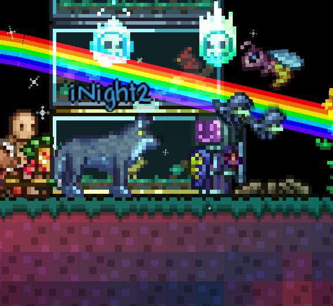
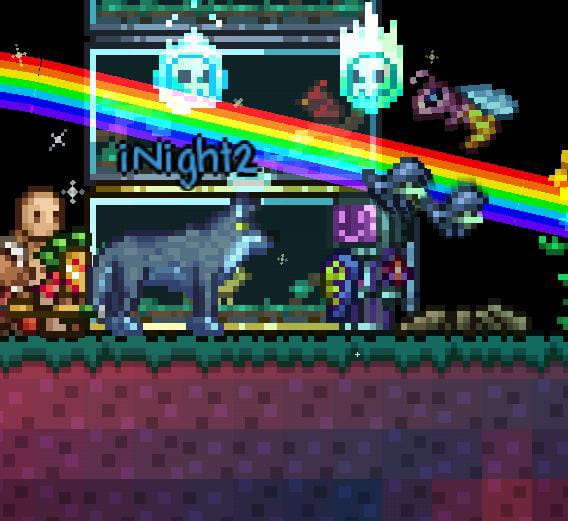
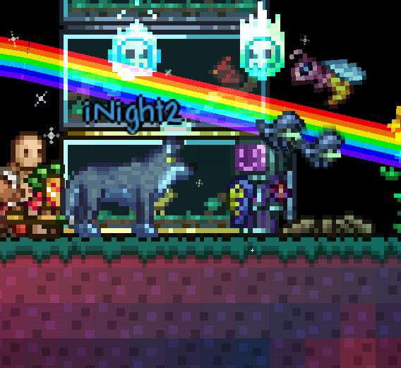
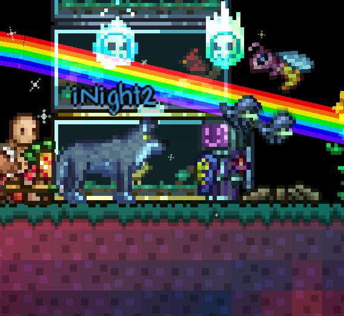

Ya pasaron 6 meses desde que nos conocimos, y aún sigue vivido en mi memoria esa tarde en la que empezamos a hablar por un meme sin gracia de BTC.
Tantas noches hablando, jugando o simplemente haciéndonos compañía. Antes de que siquiera haya pasado algo, ya sentía que te conocía desde hace tiempo y la pasaba (paso) muy bien siempre que estoy contigo.
No me di ni cuenta y ya pude tener la fortuna de poder llamarte mi pareja, poder ser esa persona con la que pasas tiempo y quieres.
Seis meses no es una cantidad corta de tiempo, y hasta ahora sigo teniendo el mismo sentimiento de esa vez que me di cuenta que ambos nos queríamos de la misma forma —acepto que yo tardé en darme cuenta—, de igual manera, cada día es más bonito teniéndote a mi lado.
Espero poder seguir siendo por un largo tiempo esa persona que llamas "tu amor", tu pareja, esa persona que está a tu lado y apoya en todo, porque por más que sé que seguro tendremos problemas, quiero que los resolvamos juntos, porque sé que tú eres la persona que quiero a mi lado.
Gracias por dejarme considerarte a ti Mi Persona Especial ♡
Atte: mycb